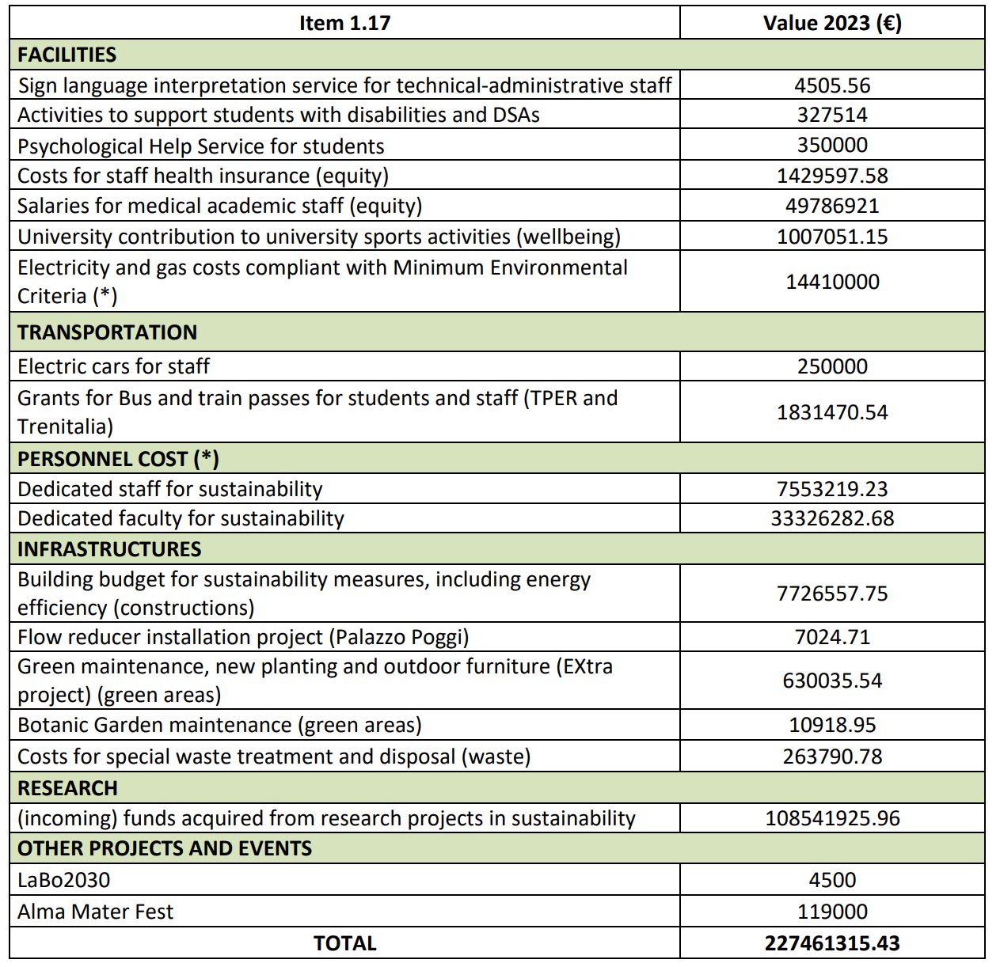
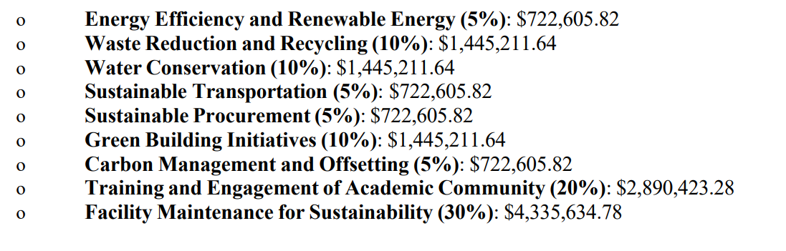

| Annual Sustainability Budget Allocation | ||||
|---|---|---|---|---|
| Category | 2018 | 2019 | 2020 | Average |
| Budget Total | $ 500,000 | $ 540,000 | $ 450,000 | $ 496,666 |
| Sustainability Budget | $ 130,000 | $ 170,000 | $ 150,000 | $ 150,000 |
| Percentage | 26.0% | 31.5% | 33.3% | 30% |
| Official Budget Allocation & Certification Evidence | |
|---|---|
| Financial Budget Allocation Ledger | Sustainability Budget Allocation Breakdown |
|
 Detailed breakdown of the university annual operating budget and fund allocations
|
 Detailed breakdown list of the sustainability budget percentages and allocated amounts
|